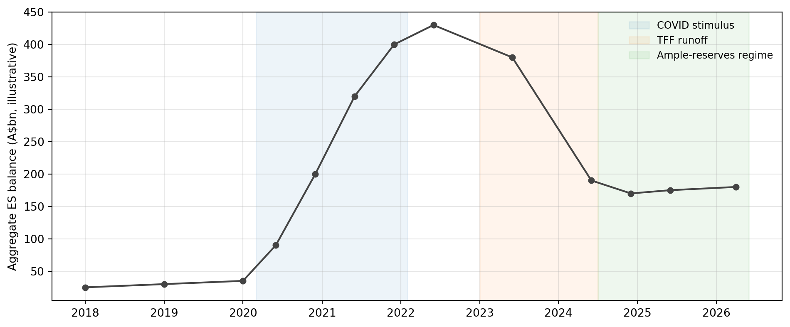
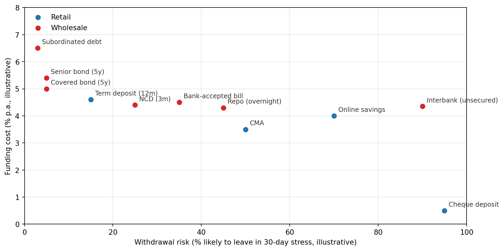

Banking and Financial Intermediation
Department of Applied Finance
2026-05-05
Newcastle, Friday morning
Customers queued around the block outside Northern Rock branches.
It was the first run on a British bank since Overend, Gurney & Co. in 1866 — 141 years.
We’ll come back to why in a moment.
It wasn’t bad loans. The mortgage book was performing.
It was the funding mix:
When the asset-backed commercial paper (ABCP) market seized in August 2007, the bank could not roll its debt.
The Bank of England announced emergency liquidity assistance on the evening of 13 September. The news leaked. The next morning, the queues formed.
A bank’s liability mix is a liquidity-risk decision.
| Last week (Week 8) | This week (Week 9) |
|---|---|
| What is liquidity risk? | What’s the toolkit to manage it? |
| LCR, NSFR — measurement | Asset-side and liability-side instruments |
| The cost when it goes wrong | The cost of preventing it going wrong |
Throughout: every choice is a trade-off between cost and withdrawal risk. There is no free liquidity.
When a depositor walks in and asks for their money, the bank has two options.
Option 1. Sell something it already owns.
Option 2. Borrow new money from someone else.
That’s it. Every liquidity-management slide that follows is one of these two.
Stored liquidity = selling or pledging liquid assets the bank already holds.
Examples:
The traditional approach. Used by all banks; relied on heavily by small banks.
Purchased liquidity = borrowing new funds in wholesale markets.
Examples:
The modern approach. Relied on heavily by large banks. Northern Rock relied on it too heavily.
| Stored | Purchased | |
|---|---|---|
| Cost | Yield foregone on low-yielding assets | Funding spread above the cash rate |
| Risk in stress | Forced sale at fire-sale prices | Lenders disappear; cannot roll over |
| Effect on balance sheet | Shrinks (asset sold) | Stays the same size (new liability) |
Most modern banks use both. The mix is the strategy.
An asset is liquid when it trades in a deep market.
Market depth
A market is deep if even large trades barely move the price.
Example: an Australian Government 10-year bond. You can sell A$500m in an afternoon at roughly the screen price.
Counter-example: a single residential mortgage. You can’t sell one. You have to securitise a portfolio of thousands.
The deeper the market, the lower the liquidation cost of the asset — and the more useful it is in a crisis.
HQLA = High-Quality Liquid Assets — the numerator of the LCR (Liquidity Coverage Ratio).
| Tier | Examples | Haircut |
|---|---|---|
| Level 1 | Cash, central-bank reserves, sovereign debt | 0% |
| Level 2A | High-grade corporate debt, covered bonds | 15% |
| Level 2B | Eligible RMBS, equities | 25–50% |
Level 2 combined cannot exceed 40% of total HQLA.
The haircut is the assumed loss-on-sale in stress.
Every dollar of HQLA is a dollar not lent to a customer.
A simple example:
This is why banks don’t just hold “lots of HQLA to be safe” — liquidity has a price.
Every Australian bank has one account at the RBA: the Exchange Settlement Account.
Without an ESA, two banks cannot settle interbank payments. It is the operational core of the Australian payment system.
The cash market is where banks lend and borrow ES balances, usually overnight.
Two variables matter:
The RBA’s job is to keep the cash rate close to its target.
The cash rate target is the RBA’s headline policy rate — the number that hits the news after every Board meeting.
Mortgage rates, business loan rates, deposit rates — all are anchored, directly or indirectly, to the cash rate.
The cash rate target is set by the RBA Board. The actual cash rate is determined by demand and supply in the cash market — and the RBA’s job is to align the two.
Repo = repurchase agreement.
A repo is a sale today + an agreement to repurchase tomorrow:
Economically, Bank A has borrowed $100 overnight at 5% (annualised), with the bond as collateral.
Repos dominate short-term funding because they’re secured — cheaper than unsecured lending.
Before March 2020:
This was a scarce reserves regime — banks competed for a limited pool of reserves.

Pre-COVID floor → COVID surge → post-TFF runoff → ample-reserves equilibrium.
In March 2024 the RBA Board endorsed a permanent shift to an ample reserves framework.
The mechanics:
The RBA no longer controls the quantity of reserves — banks do. The RBA controls the price.
Three smaller facilities round out the toolkit.
| Facility | What it does |
|---|---|
| Intra-day repo | Liquidity within a business day; reversed before close. |
| Overnight repo | Funds end-of-day liquidity needs. |
| Standing Facility | Penalty-rate overnight backstop if the ESA goes short. |
The standing facility exists for emergencies. Routine liquidity goes through the weekly OMO.
Term Funding Facility (TFF) — 2020 to 2024
COVID-19 crisis tool. Banks could borrow up to 3 years at the cash rate target.
Committed Liquidity Facility (CLF) — 2015 to 2023
A uniquely Australian fix. Basel III’s LCR requires HQLA. The Australian Government simply doesn’t issue enough debt for ADIs to hold sufficient Level 1 securities. The CLF was a paid line of credit from the RBA that counted as HQLA.
The post-COVID surge in Commonwealth bond issuance solved the underlying problem. APRA reduced the aggregate CLF from $140bn (Sep 2021) to zero on 1 January 2023.
The goal of liability management:
Construct a portfolio of liabilities that is low cost and has low withdrawal risk.
The problem:
There is no free quadrant. Northern Rock learned this the hard way.

Cheap and sticky doesn’t exist. Banks pick a point on the frontier.
We’ll walk through the major instruments in three groups.
Each instrument sits somewhere on the frontier above. The order roughly matches retail to wholesale and short to long.
The cheque account, the everyday transaction account.
Why are these so cheap for the bank?
In the United States, demand deposits paid zero interest from 1933 to 2011.
Regulation Q (1933 Banking Act)
After the 1930s banking panics, U.S. regulators believed competition for deposits had pushed banks to take excessive risk.
Regulation Q prohibited U.S. banks from paying any interest on demand deposits. The prohibition lasted 78 years.
Section 627 of the Dodd–Frank Act repealed it on 21 July 2011. Banks are now permitted — but not required — to pay. Most still don’t.
Australia never had this prohibition. That’s why an Aussie online transaction account in 2026 can pay 4–5% while a Bank of America checking account pays ~0.01%.
Even when explicit interest is zero, the deposit costs the bank real money:
Competition forces banks to partially absorb these costs and offer subsidised services. The depositor receives implicit interest — interest paid in services rather than cash.
Define the implicit interest rate (IIR) on a demand-deposit account as:
\[ \text{IIR} = \dfrac{C - F}{B} \]
where, per account per year:
If \(C > F\), the bank is subsidising the depositor. Implicit interest is positive.
If \(C < F\), the bank is taxing the depositor (fees exceed costs). Implicit interest is negative.
Move \(C\), \(F\), and \(B\). The IIR updates live.
viewof C = Inputs.range([0, 400], {value: 150, step: 5, label: "C ($/yr)"})
viewof F = Inputs.range([0, 400], {value: 100, step: 5, label: "F ($/yr)"})
viewof B = Inputs.range([200, 10000], {value: 1200, step: 50, label: "B ($)"})
iir = (C - F) / B
md`
IIR = ${(iir*100).toFixed(2)}%
${iir > 0
? "Bank subsidises the depositor — costs exceed fees."
: iir < 0
? "Bank taxes the depositor — fees exceed costs."
: "Costs and fees exactly net out."}
`The textbook example: \(C=\$150\), \(F=\$100\), \(B=\$1{,}200\). IIR ≈ 4.17%. The depositor “earns” 4.17% per year in subsidised services, even though the cash interest rate on the account is zero.
If an account also pays explicit interest above some minimum balance, the depositor’s total return is:
\[ G = \underbrace{r \cdot B \cdot \mathbb{1}\{B \ge M\}}_{\text{explicit}} \;+\; \underbrace{(c - f) \cdot n \cdot 12}_{\text{implicit}} \]
where:
The indicator \(\mathbb{1}\{B \ge M\}\) is 1 if the balance clears the threshold and 0 otherwise.
viewof B2 = Inputs.range([0, 5000], {value: 1000, step: 50, label: "B ($)"})
viewof r = Inputs.range([0, 8], {value: 5, step: 0.05, label: "r (%)"})
viewof M = Inputs.range([0, 5000], {value: 500, step: 50, label: "M ($)"})
viewof c = Inputs.range([0, 0.5], {value: 0.15, step: 0.01, label: "c ($)"})
viewof f = Inputs.range([0, 0.5], {value: 0.10, step: 0.01, label: "f ($)"})
viewof n = Inputs.range([0, 200], {value: 50, step: 5, label: "n"})
explicit = B2 >= M ? B2 * (r/100) : 0
implicit = (c - f) * n * 12
gross = explicit + implicit
md`
Explicit = $${explicit.toFixed(2)}
Implicit = $${implicit.toFixed(2)}
Gross G = $${gross.toFixed(2)}
`Two things to try:
Two close cousins of the demand deposit, both with lower withdrawal risk.
Savings account
Cash management account (CMA)
Fixed maturity, fixed rate, early withdrawal penalty.
For the bank, term deposits are the workhorse of long, sticky retail funding. The cost is a known number locked in for the term.
A wholesale time deposit. Face value typically above ~A$100,000. Maturities from days to years.
The key word is negotiable: the holder can sell the NCD in the secondary market.
NCDs sit between retail term deposits and pure wholesale funding.
Short-term unsecured loans between banks, usually overnight.
This is the cheapest unsecured funding a bank can get. It’s also the first to disappear in a crisis.
We met repos earlier as an RBA tool. Banks also use them with each other.
Why secured beats unsecured
The repo lender holds your collateral. If you default, they sell it. So they don’t need to charge a credit risk premium.
In stress, secured markets often stay open while unsecured markets close. This is why every bank treasurer has a stack of repo-eligible collateral ready to go.
Two short-dated wholesale instruments.
Bank-accepted bill (BAB)
Commercial paper (CP)
A bond issued by the bank, backed by a ring-fenced pool of assets that stays on the bank’s balance sheet.
Why covered bonds are special
Bondholders have a dual claim:
Hence covered bonds are often rated AAA even when the issuer is rated AA−.
In Australia:
The bottom of the funding stack — long-dated, often callable, subordinated to depositors and senior creditors.
The most stable funding a bank can have, short of equity. Also the most expensive.
The same trade-off, different instruments:
| FI type | Main funding | Distinct liquidity issue |
|---|---|---|
| Life insurer | Premiums, policy reserves | Mass policy surrenders |
| P–C insurer | Premiums, claims reserves | Catastrophe spike forces asset sales |
| Securities firm / IB | Repos, bank loans, short positions | Inventory financing during stress |
| Finance company | Commercial paper, long-term debt | CP rollover stress |
The unifying theme: short-term liabilities funding less-liquid assets, with rollover risk in the middle.
Australian liquidity rules sit under APRA’s Prudential Standard APS 210. Banks fall into one of two regimes:
| LCR ADI | MLH ADI | |
|---|---|---|
| Who | Big 4 + larger banks | Smaller ADIs |
| Core ratio | LCR ≥ 100% and NSFR ≥ 100% | Liquid assets ≥ 9% of liabilities |
| Liquid assets | HQLA (Level 1 + capped Level 2) | RBA-repo-eligible debt securities |
For depositors: the Financial Claims Scheme guarantees up to A$250,000 per account-holder per ADI, since 1 February 2012.
APRA finalised targeted changes in 2024 in response to the March 2023 banking turmoil.
Effective 1 July 2025:
Why it matters: an MLH ADI’s liquidity cushion will now visibly shrink when bond yields rise, rather than hide behind book values.
AFIN8003 Banking and Financial Intermediation